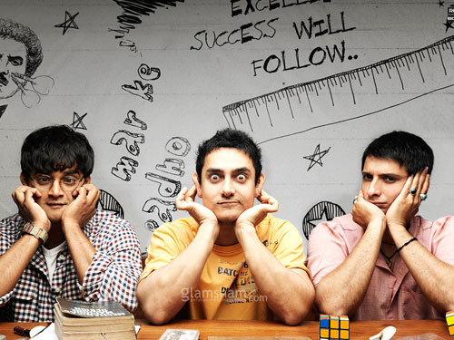

My favourite movies
"Doctor House"
Genre: Drama
Relase date: 2004
Storyline:
The series follows the life of anti-social, pain killer addict, witty and arrogant medical doctor Gregory House with only half a muscle in his right leg. He and his team of medical doctors try to cure complex and rare diseases from very ill ordinary people in the United States of America.
Creator: David Shore
Stars: Hugh Laurie, Omar Epps, Robert Sean Leonard
"3-idiots"

Genre: Comedy
Relase date: 2009
Storyline:
Farhan Qureshi and Raju Rastogi want to re-unite with their fellow collegian, Rancho, after faking a stroke aboard an Air India plane, and excusing himself from his wife - trouser less - respectively. Enroute, they encounter another student, Chatur Ramalingam, now a successful businessman, who reminds them of a bet they had undertaken 10 years ago.
Director: Rajkumar Hirani
Stars: Aamir Khan, Madhavan, Mona Singh
"The maze runner"

Genre: young adult, science fiction, post-apocalyptic
Relase date: 2015
Storyline:
Thomas is deposited in a community of boys after his memory is erased, soon learning they're trapped in a maze that will require him to join forces with fellow "runners" for a shot to escape. After having escaped the Maze, the Gladers now face a new set of challenges on the open roads of a desolate landscape filled with unimaginable obstacles.
Director: Wes Ball
Stars: Dylan O'Brien, Kaya Scodelario, Thomas Brodie-Sangster
"Boys over flowers"
Genre: Drama, Romance, Comedy
Relase date: 2009
Storyline:
Poor girl Jan Di attends elite Shin Hwa High where she's bullied by Joon Pyo. Joon Pyo becomes attracted to Jan Di; however, Jan Di has a crush on Yoon Ji Hoo, Joon Pyo's best friend. This is a Cinderella story about the F4 friends and the normal girl who manages to break into their clique and win their friendship along with the romantic affections of two of the four.
Director: Jeon Ki-sang
Stars: Hye-sun Koo, Min-ho Lee, Hyun-joong Kim
Home page =>
>